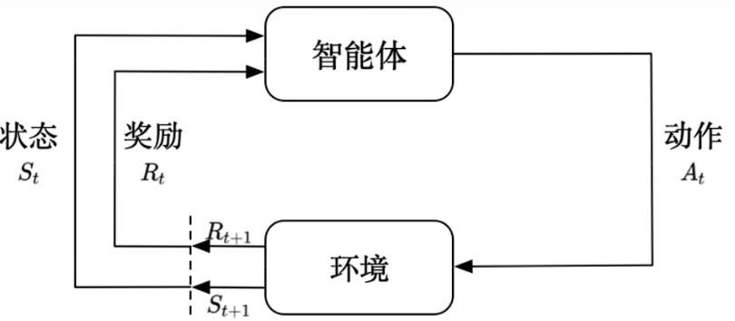
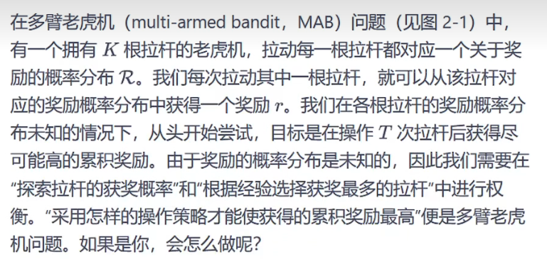
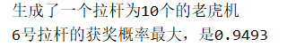
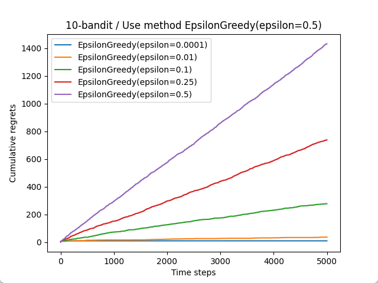
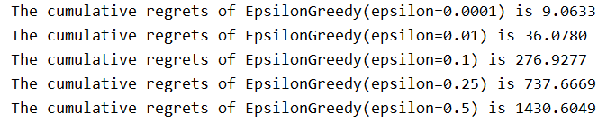
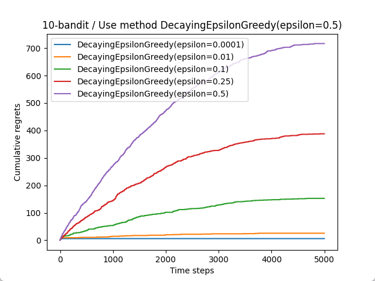
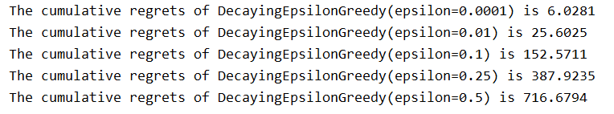

以下面这张图和一个例子来说明RL的基本逻辑

假设智能体是一个刚出生的机器人，我们的目的是想训练它学会站起来行走。
那么它的动作有很多，比如脚摆动10°/20°，手摆动5°/2°，balablabla。
环境就是一个简单的笔直的通道，从机器人出生点到终点，只不过这条直道上有许多很矮的障碍。
奖励就是机器人离终点越近，它每走一个单位距离所能获得的奖励值就增加。并且规定如果机器人长时间没有前进，将会扣除奖励值。并且规定如果机器人被绊倒了，将会大大扣除奖励值。
状态就是智能体通过与环境交互后每一时刻的状态。比如时刻1它到达了某个点是一个状态，时刻2它在某个点被绊倒了也是一个状态。
通过设计这么一个机制，机器人为了得到最大奖励值，他就会逐渐学会站起来，并且走到终点。这就是深度强化学习（RL）。
强化学习与监督学习的区别
监督学习里，都是有标签的，网络可以通过正确的标签来修正自己的预测。但是强化学习里没有，它只能通过与环境不断交互来优化自己的策略。
下面通过一个实验，通过实际写代码，来加深对RL的理解：

首先对问题进行建模，动作就是每个拉杆选择拉 /
不拉。奖励就是拉下每个拉杆所获得奖励（中了得1分，没中得0分）。玩家就是我们自己。目标是在T次拉杆后，使得获得的奖励最大。
作为一个没头脑的人，我们可能随便拉，这样子显然不会使最大奖励收敛。
作为一个有一点头脑的人，他会这样做：拿出10%的机会去“冒险”，即随机拉一个杆，剩下90%机会去拉已经拉过的杆中获益估值最高的杆。
作为一个更聪明的人，他随着拉杆次数的增加，拿去“冒险”的机会比例会逐渐降低。因为他知道，随着拉杆次数的增加，他对每根杆的获益估值越来越准确，所以此时更优的方法是去拉已知估值最高的，而不是拿去随机冒险浪费次数。
通过上面这3个人的想法，我们其实已经可以有点感觉到本质了。“冒险”其实就是去探测每个拉杆的获奖概率值，“冒险”次数越多，拟合出来的每个拉杆的获奖概率值就越准。“不冒险”就是在自己拟合出来的每个拉杆概率下，选最优的。
好的，思路知道了，代码开搞。文中附有注释：
代码中有一点要解释一下，就是代码中的“懊悔”和“获益函数”。作为上帝视角的我们，肯定要评测不同策略（普通人、聪明人、更聪明的人）的表现。所以我们需要衡量标准。所以用“累计懊悔”来充当这个衡量标准。每次懊悔的计算公式很简单，即是(拉杆中最大获奖概率
- 当前拉杆的获奖概率)。
然后是“获益函数”，获益函数就是上面所说的我们拟合的每个拉杆的获奖概率值
的平均值。他的计算公式为：\(E_k = E_k +
\frac{r_t - E_k}{N_k}\)，k是第k个拉杆，\(r_t\)是在时刻t时拉下拉杆k所获得的收益，\(N_k\)是第k根拉杆被拉下的次数。
上面这个公式其实是这样推导的： \[
E_k = \frac{\sum_{t=1}^{N_t}r_t}{N_k} = \frac{\sum_{t=1}^{N_k-1}r_t +
r_{N_k}}{N_k} = \frac{(N_k-1)E_{k-1}+r_{N_k}}{N_k} = E_{k-1} +
\frac{r_{N_k}-E_{k-1}}{N_k}
\] 这样就得到了\(E_k\)的递推公式，需要注意的是，代码中给\(E_k, k∈[1,
K]\)赋了初值1。因为这样能保证至少先把每个拉杆都拉一遍。
如果赋初值为0的话，那么真正只有“冒险”的时候才有几率去拉新杆了。这样的话新杆很难有机会拉到。
所以我们希望先把全部杆至少拉一遍。
1
2
3
4
5
6
7
8
9
10
11
12
13
14
15
16
17
18
19
20
21
22
23
24
25
26
27
28
29
30
31
32
33
34
35
36
37
38
39
40
41
42
43
44
45
46
47
48
49
50
51
52
53
54
55
56
57
58
59
60
61
62
63
64
65
66
67
68
69
70
71
72
73
74
75
76
77
78
79
80
81
82
83
84
85
86
87
88
89
90
91
92
93
94
95
96
97
98
99
100
101
102
103
104
105
106
107
108
109
110
111
| import numpy as np
import matplotlib.pyplot as plt
class A:
def __init__(self, K):
self.K = K
self.probs = np.random.uniform(low=0, high=1, size=K)
self.best_id = np.argmax(self.probs)
self.best_prob = self.probs[self.best_id]
def play(self, k):
if np.random.random() < self.probs[k]:
return 1
else:
return 0
K = 10
a = A(K)
print ('生成了一个拉杆为%d个的老虎机' % K)
print ('%d号拉杆的获奖概率最大，是%.4f' % (a.best_id, a.best_prob))
class Solver:
def __init__(self, a):
self.a = a
self.counts = np.zeros(a.K)
self.regret = 0
self.actions = []
self.regrets = []
self.T = 0
def run_one_step(self):
raise NotImplementedError
def run(self, num_steps):
self.T = num_steps
for _ in range(num_steps):
k = self.run_one_step()
self.counts[k] += 1
self.actions.append(k)
self.regret += self.a.best_prob - self.a.probs[k]
self.regrets.append(self.regret)
class EpsilonGreedy(Solver):
def __init__(self, a, epsilon=0.01):
super(EpsilonGreedy, self).__init__(a)
self.epsilon = epsilon
self.estimates = np.array([1.0] * a.K)
def run_one_step(self):
if np.random.random() < self.epsilon:
k = np.random.randint(0, a.K)
else:
k = np.argmax(self.estimates)
r = self.a.play(k)
self.estimates[k] += 1 / (self.counts[k] + 1) * (r - self.estimates[k])
return k
def plot_results(solvers, solver_name):
for idx, solver in enumerate(solvers):
x = range(len(solver.actions))
plt.plot(x, solver.regrets, label=solver_name[idx])
plt.xlabel('Time steps')
plt.ylabel('Cumulative regrets')
plt.title('%d-bandit / Use method %s' % (solver.a.K, solver_name[idx]))
plt.legend()
plt.show()
epsilons = [1e-4, 0.01, 0.1, 0.25, 0.5]
epsilon_greedy_solvers = [EpsilonGreedy(a, epsilon=e) for e in epsilons]
epsilon_greedy_solvers_name = ['EpsilonGreedy(epsilon={})'.format(e) for e in epsilons]
for idx, solver in enumerate(epsilon_greedy_solvers):
solver.run(5000)
print('The cumulative regrets of %s is %.4lf' % (epsilon_greedy_solvers_name[idx], solver.regret))
plot_results(epsilon_greedy_solvers, epsilon_greedy_solvers_name)
class DecayingEpsilonGreedy(EpsilonGreedy):
def __init__(self, a, epsilon=0.1):
super(DecayingEpsilonGreedy, self).__init__(a, epsilon=epsilon)
self.count = -1
self.epsilon2 = self.epsilon
def run_one_step(self):
self.count += 1
self.epsilon =(-1 * self.epsilon2 / self.T) * self.count + self.epsilon2
if np.random.random() < self.epsilon:
k = np.random.randint(0, a.K)
else:
k = np.argmax(self.estimates)
r = self.a.play(k)
self.estimates[k] += 1 / (self.counts[k] + 1) * (r - self.estimates[k])
return k
print()
epsilons = [1e-4, 0.01, 0.1, 0.25, 0.5]
decaying_epsilon_greedy_solvers = [DecayingEpsilonGreedy(a, epsilon=e) for e in epsilons]
decaying_epsilon_greedy_solvers_name = ['DecayingEpsilonGreedy(epsilon={})'.format(e) for e in epsilons]
for idx, solver in enumerate(decaying_epsilon_greedy_solvers):
solver.run(5000)
print ('The cumulative regrets of %s is %.4lf' % (decaying_epsilon_greedy_solvers_name[idx], solver.regret))
plot_results(decaying_epsilon_greedy_solvers, decaying_epsilon_greedy_solvers_name)
|
让我们来看一下代码的运行结果：





（俩图的标题的epsilon那错了懒得改了不影响）
对于图中这次生成的数据来说，“冒险”概率越低效果越好（曲线几乎不增长）。当然我自己在本地测试各种生成数据后总结发现冒险概率=0.01/0.1时表现最优。
然后使用DecayingEpsilonGreedy策略后表现更优了一些，对那些初始冒险率越大的优化效果越好。
通过这个案例，已经可以对RL有一个初步理解了。老虎机这个案例除了用Epsilon-Greedy，还可以用上置信界算法、汤普森采样算法方法去解决。这三种方法是解决绝大多数RL的基本思想。
但是老虎机这个案例是无状态强化学习，因为每一次与老虎机交互的结果和以往的动作无关。那有状态的强化学习怎么办呢？下一节将会对马尔可夫决策过程进行讲解。